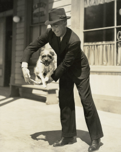
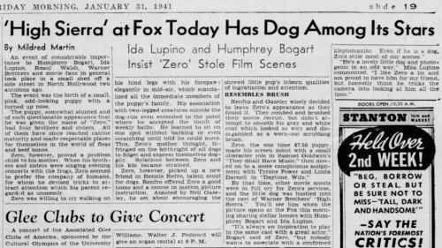

In the classic 1941 film High Sierra, a small dog plays a critical part in the plot. This dog plays a stray named "Pard" that the lead character, a fugitive played by Humphrey Bogart, grows attached to and adopts. In the credits, the dog even gets billing: Pard was played by a dog named Zero.
When reading modern articles about High Sierra, it is common to find asides asserting that Zero belonged to Humphrey Bogart in real life. This is certainly plausible, as Bogart and the dog appear to share a deep bond in the film, and there are a number of promotional shots from the movie showing Bogart playing with Zero.
References to Zero being Bogart's dog show up in some books. An example is Crime Wave: The Filmgoer's Guide To the Great Crime Movies (2006), by Howard Hughes: "Bogart's own dog Zero played Pard." Another is The Ultimate Book of Gangster Movies (2011), by George Anastasia and Glen Macnow: "Pard is listed in the credits as Zero the Dog and was, in fact, Bogart's pet in real life." This bit of trivia has become so prevalent as to be nearly ubiquitous in mentions of the dog in High Sierra on social media platforms.
Even renowned experts on Hollywood history like TCM's Eddie Muller have promoted this bit of Hollywood trivia. In his outro to High Sierra from a Noir Alley showing in March 2019, Muller states, "The pooch who played Pard was actually Humphrey Bogart's dog, Zero. Just one more example of this film's spot-on casting."
But the reality appears to be different, as I stumbled across recently while reading old newspaper articles about the production of the movie. This Philadelphia Inquirer article from Jan. 31, 1941 provided the first revelation for me that Zero was not, in fact, Humphrey Bogart's dog.

A shocker for me! Zero belonged to a "talent scout for dogs" named Rennie Renfro.
Other newspaper articles from that year describing the making of the movie discuss Zero, but none that I've found suggest any connection between Bogart and Zero outside of the film production. Plenty, however, mention Renfro's connection to Zero.
A little more research revealed that Renfro was not just any talent scout, but one of the largest suppliers of dog actors for Hollywood at the time, and for years before and after. His most famous dog was Daisy from the long-running Blondie series of films, but he trained and managed dozens more.
The dog Zero had acted in at least two movies prior to High Sierra: Samuel Goldwyn's They Shall Have Music (1939) with famous violinist Jascha Heifetz, and 20th Century-Fox's Daytime Wife (1939) with Tyrone Power and Linda Darnell. Some more research revealed a few films that Zero was in after High Sierra, including MGM's Men of Boys Town (1941) with Spencer Tracy and Mickey Rooney, and Warner Bros.'s Sergeant York (1941) with Gary Cooper. The last film I have so far found evidence of him in is a poverty row one starring Marjorie Reynolds called Law of the Timber (1941).
While Zero was clearly not Bogart's dog at the time of High Sierra, filmed in the fall of 1940, could Bogart have obtained Zero afterwards?
In fact, there was a story reported in 1941, told second-hand, that Bogart requested to purchase Zero for $600 only to be told by Renfro that the price had increased to $6000. I presume that put an end to Bogart's efforts to obtain Zero.
But of course plenty of this story remains hidden. What became of Zero after 1941? Was Zero in movies in 1942 that I haven't uncovered yet? Did Renfro retire Zero from films after his assistant, Zero's trainer Neil Gazeley, entered the Army in 1941, or for other reasons? If so, could Renfro have sold him to Bogart at that time?
I'm certainly curious of the answers to these, as well as to how and when the urban legend that Zero was Bogart's dog began. If anyone has more info, please let me know!
To close, there is a Life magazine profile of Bogart and his wife Mayo Methot from mid-1944 that contains a posed photo of them with their three dogs. This is three-and-a-half years after the filming of High Sierra. In case it is meaningful, none of the dogs look anything remotely like Zero.

We just viewed High Sierra along with the special features on the Criterion Collection dvd. One scene in the film biography of Bogart shows him with wife Bacall. When she enters the house we see a dog that looks exactly like Pard/Zero. This would have been several years after the making of High Sierra. It has to be Zero.
Posted by: David Rawlins | Dec 27, 2021 at 10:46 AM
Thanks for pointing that out. I just reviewed that film biography on the Criterion disc and saw the scene you mentioned a bit over half an hour in.
In my viewing, the dog is clearly not Zero.
But we don't have to guess from appearances on a grainy video. The clip is taken from an appearance of Bogart and Bacall on the "Person to Person" program from Sep 3, 1954, which I've found on YouTube. This was 14 years after the filming of 'High Sierra', meaning Zero would have been quite old if he were still alive.
In the full clip, Bacall introduces three dogs to the host of the show, Edward Murrow, and calls them Baby, George, and Harvey. (The audio is rough, but I'm pretty sure those were the names she used.) The two we see initially (Baby and George) look very different from Zero. Harvey is hiding behind Bacall when introduced, though he may be the one we see later when she enters the house (the clip that made it into the film bio on the Criterion disc). Anyway, none are introduced as Zero or Pard, and none that we actually see resembles Zero.
Alas, while I cannot absolutely rule out that Bogart acquired Zero after the filming of 'High Sierra', I have still not seen any evidence that suggests he did.
Thanks for reading and taking the time to respond with your observation!
Posted by: P.M.Bryant | Jan 19, 2022 at 03:30 PM
Definitely the star of the movie!!
Posted by: Barry Todd | Feb 16, 2022 at 03:18 PM
On TCM tonight (5-18-22) there was a docu about the career of famed director RAOUL WALSH ("The True Adventures of Raoul Walsh") ... During which the narrator's voice quotes Walsh as saying that in the movie HIGH SIERRA, the dog "Pard" WAS in fact the actor Humphrey Bogart's actual dog.
Posted by: S. Hargrave | May 18, 2022 at 11:13 PM
Thanks for reading and for pointing out the Walsh documentary!
Given the documentary evidence from 1940-'41 that Bogart did not own Zero/Pard, I have to be skeptical of any individual recollection from much later. Furthermore, Walsh has a bit of a reputation for embellishing his stories. I am curious, though, that this suggests Walsh be the source of the notion that the dog was Bogart's own.
Posted by: P.M.Bryant | May 19, 2022 at 05:42 PM
5/20/22
In the first few scenes of Fingers at the Window (1942) clearly Zero is seen scooting under a bed and turns to face the camera. Take a look!
Posted by: Diane | May 20, 2022 at 08:45 AM
Thanks, Diane! That was definitely Zero in "Fingers at the Window". Alas, he was only on screen for a second or so as part of a montage.
Posted by: P.M.Bryant | May 20, 2022 at 08:53 PM
Zero was quite the character! Does anyone know if he was bred? Is there a lineage?
Posted by: Carolyn J. Jarvis | Jun 25, 2022 at 03:48 PM
Carolyn, based on old newspaper articles like the one I've included above, I don't believe Zero was bred. In fact, the implication is that he was a stray before he was taken in by trainer Rennie Renfro.
Posted by: P.M.Bryant | Jun 26, 2022 at 02:16 PM
That little Pard somehow has wormed his way into the hearts of many, including me.
I cannot imagine High Sierra without Pard.
Posted by: Carolyn Bogdan | Mar 18, 2023 at 03:10 PM
Thank you for doing this research! Watching High Sierra right now, and I wondered about that title credit at the first of the movie. People loved their dog heroes/heroines like Rin-Tin-Tin and Lassie, and this was such a smart and unexpected aspect of a movie about a hard-boiled crook. Thanks for dispelling the rumor that Zero was Bogie’s dog. I’ve got to believe the actor was asked this question and that at some point he answered it, if we could just find an interview transcript. I hope somebody told Eddie Mueller, so he doesn’t continue to spread Raoul Walsh’s tale (pun intended).
Posted by: Marilyn Clint | Sep 14, 2023 at 05:25 PM
Marilyn, thanks for the nice comments!
Posted by: P.M.Bryant | Sep 26, 2023 at 06:26 PM
I'm nearly 100% certain Zero also appears in the 1940 Three Stooges short "From Nurse to Worse," in a sequence that begins at approximately 7:15 into the film. If it's Zero, this would certainly suggest he wasn't Bogart's dog as Bogart had no affiliation with Columbia Pictures and there's no reason to believe he would randomly lend his dog to the Stooges. But stunt dogs, of course, would service any studio.
From Nurse to Worse: https://www.youtube.com/watch?v=tnxrgBx5NuI&t=7m15s
Posted by: Billy | Dec 02, 2023 at 09:46 PM
Here's another copy of From Nurse to Worse. Jump to about 1:15. The previous one was removed.
Posted by: Billy | Dec 06, 2023 at 11:12 AM
Big Dog looks lie a Newfie.
Posted by: Mark Lynch | Dec 13, 2024 at 12:41 AM